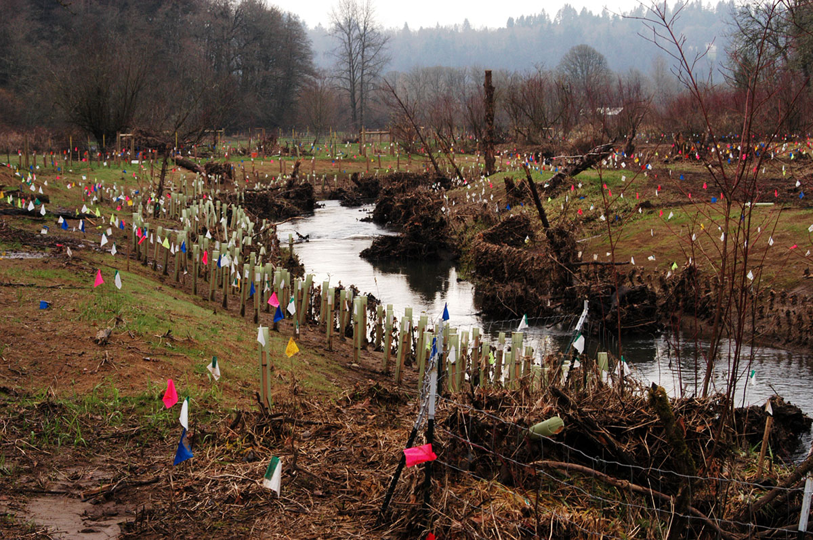

On AmeriCorps
After I graduated from college, I spent a year in an AmeriCorps program in the Portland area. For those who don’t know what AmeriCorps is, it’s essentially a domestic Peace Corps, a program designed to provide real-world skill development while addressing a local need.
Although federally funded in large part, local “chapters” of AmeriCorps have a great deal of influence over the focus of their work. Back in 2006, when I served, I worked on watershed restoration and salmon recovery, certainly a need in the Pacific Northwest. We rehabilitated stream-side areas that had been grazed and were suffering from excessive erosion and the infiltration of invasive species.
Now it appears, perhaps unsurprisingly, that AmeriCorps is on the chopping block.
AmeriCorps is a career springboard
I graduated from the University of Oregon in philosophy and religious studies. It wasn’t exactly an academic combination that leads directly into a career, but it was precisely the combination I needed at the time. I graduated near the top of my class, but I didn’t have many options when I left campus.
Shirking graduate school at the time, I was working at a coffee shop and barely making ends meet. I was recently engaged and planning a wedding on an extremely modest budget. I was building websites on the side for a negligible income supplement. What I needed was an opportunity to cultivate new skills and build a resume. That’s where AmeriCorps came in.

I made a modest stipend in AmeriCorps, barely enough to get by (AmeriCorps members are called “volunteers” for good reason; the pay was below minimum wage). I continued to work at the coffee shop on the weekends, so I was working 7 days a week. But AmeriCorps also provided an education stipend at the end of the year, which I later used toward a graduate certificate in Geographic Information Systems (GIS).

The restoration project I designed in southern Washington state.
During the course of the year, I designed a restoration project covering 9 acres, learned GIS tools and techniques, ran a plant nursery, led service-learning outings for local schools, and made some good friends.
It was AmeriCorps that provided the foundation for my career, first with a local nonprofit and later at the county I now work for. Without it, I might still be working at the coffee shop.
National service
My specific experience in AmeriCorps aside, it seems to me we need the program more than ever. I’ve often thought we need a modern-day “draft” in which recent high school graduates participate in a year or two of national service before entering the workplace or college. This service could be military, civic, environmental, housing, emergency response…there are seemingly endless possibilities to provide practical career training while creating a workforce that can respond to national emergencies such as Hurricane Katrina and local crises such as homelessness.
I’ve spoken with many people about this idea over the years, folks from across the political spectrum. The general idea is at least anecdotally popular, but getting there seemed like a tall order, even before Trump’s proposed budget axing AmeriCorps was released.
We desperately need a unifying force in our country. National service could be it, if we give it a chance. As a nation, we need to feel that we are united in something bigger than ourselves. AmeriCorps, or something like it, has always had the potential to be that uniting force that unveils our shared destiny, provides valuable skill development and workforce training, and builds national resilience and response to emergencies and disasters.
Cutting AmeriCorps is a step in the wrong direction for our country.